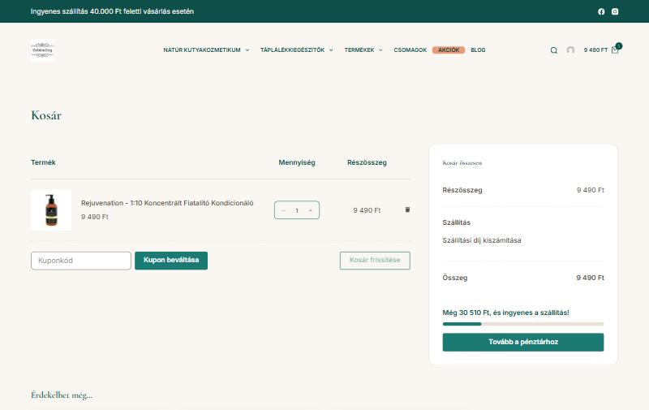
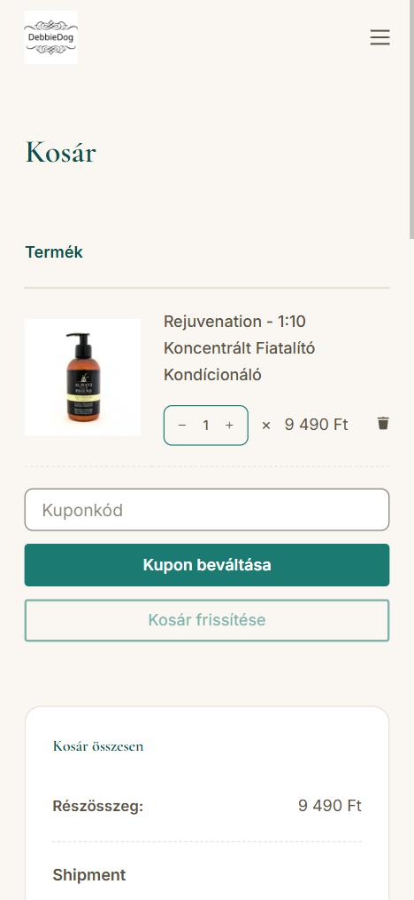
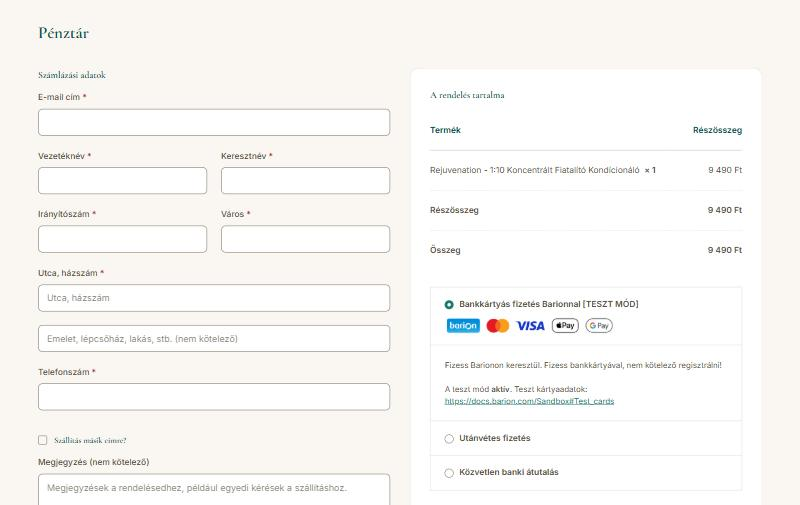
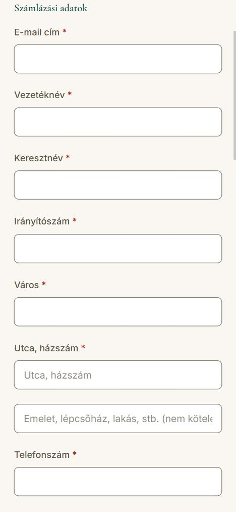
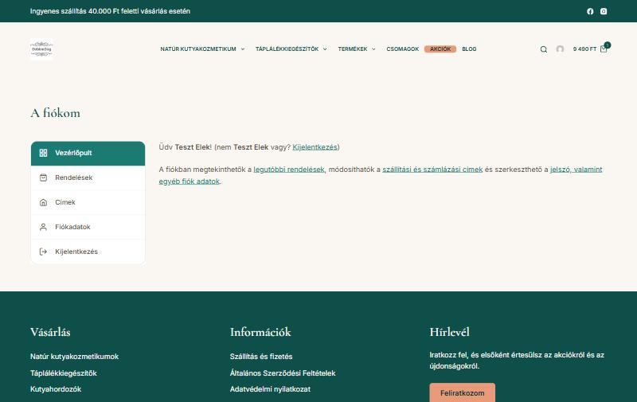

Kosár, pénztár és fiók
← vissza az előnézethez (főoldal, bolt, kategóriák, termékek) · belépés és regisztráció (kijelentkezett nézet)
A kosár, a pénztár és a belépett fiók munkamenet nélkül nem mutatható statikus oldalként, ezért itt képernyőképek láthatók a helyi tesztkörnyezetből, kitalált adatokkal. A gombok a képeken nem kattinthatók. A kosár ingyenes szállítás sávja a 40 000 Ft-os küszöböt mutatja.
Kosár


Pénztár


Fiók
